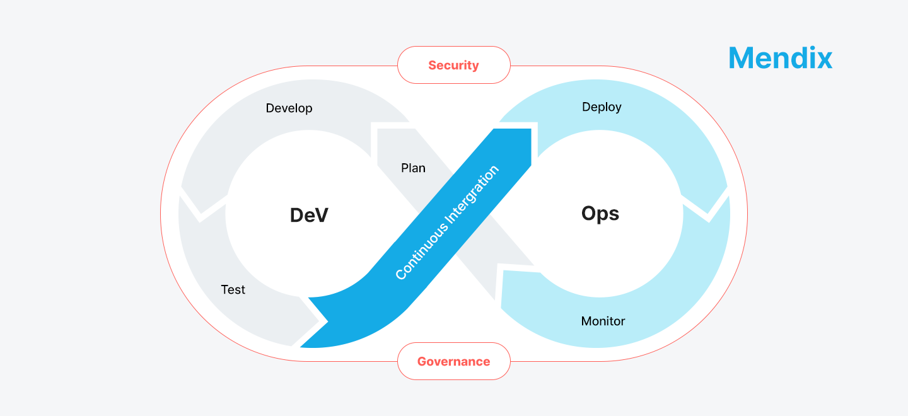
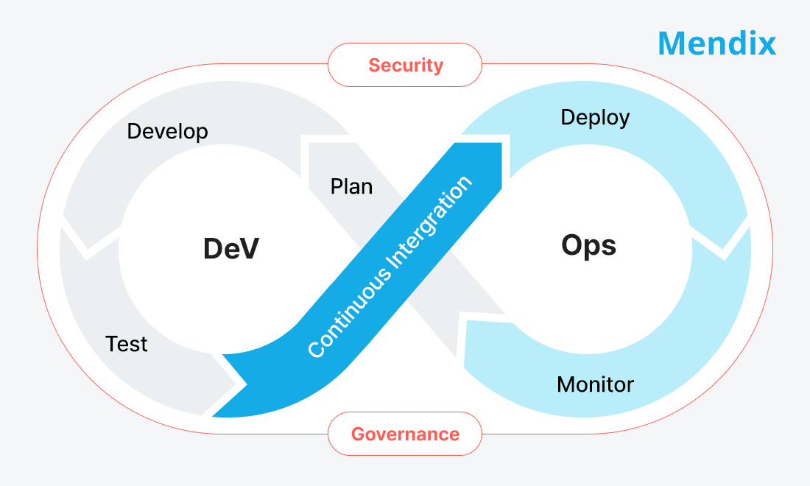
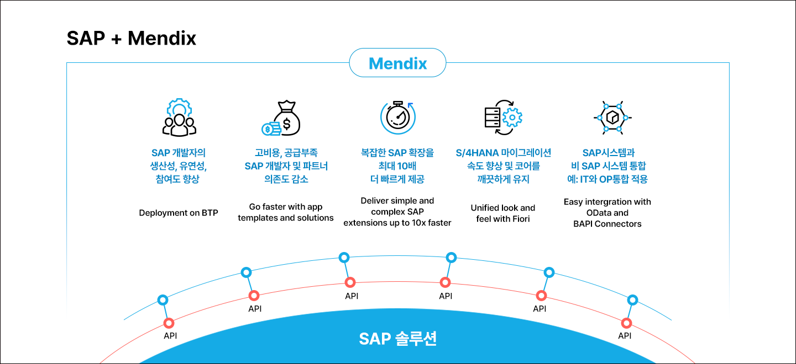
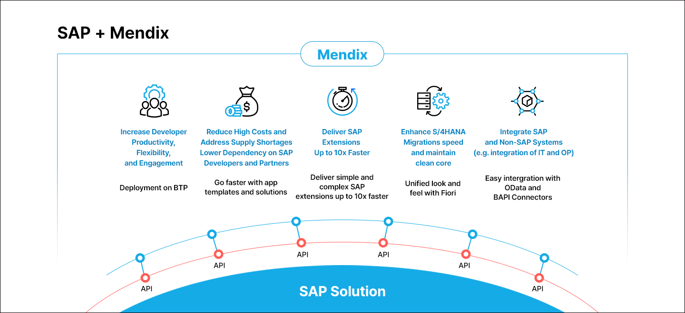
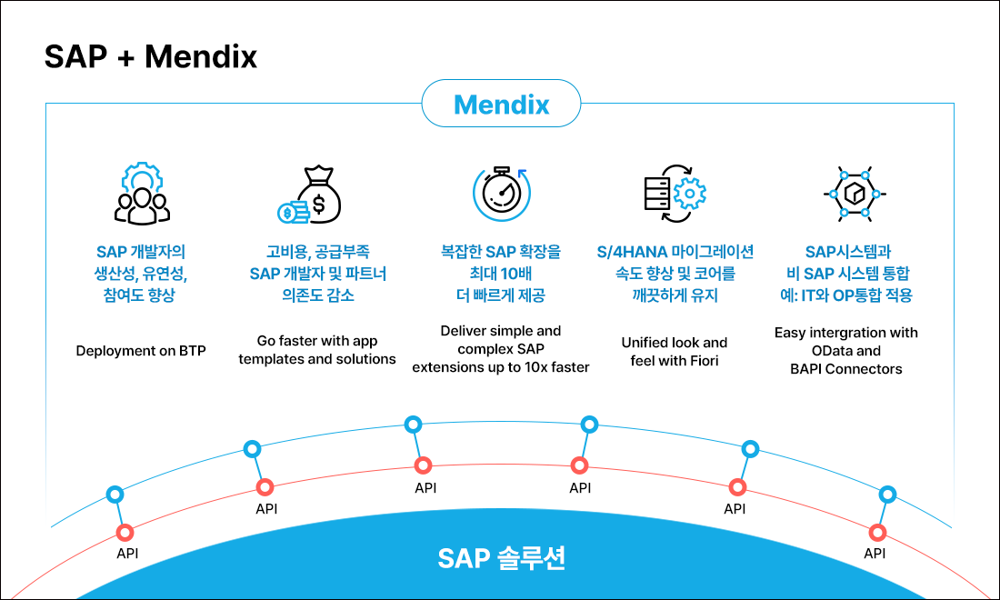
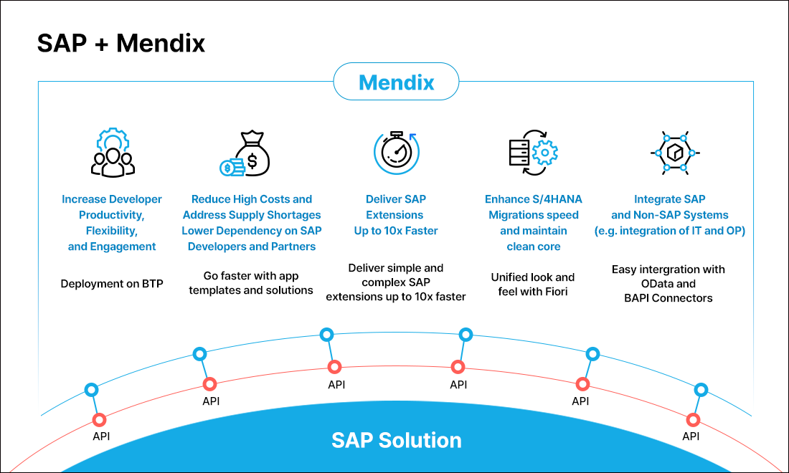

Mendix란?
글로벌 확장성을 갖춘 로우코드 애플리케이션 개발 플랫폼입니다. 비즈니스 사용자가 손쉽게 앱을 개발·운영할 수 있으며, 엔터프라이즈 환경에 적합합니다. 기업은 빠른 애플리케이션 개발과 멀티클라우드 배포를 통해 혁신 속도와 시장 대응력을 강화할 수 있습니다.
Mendix
멘딕스는 글로벌 리더 기업들이 채택하고 있는 로우코드 개발 플랫폼(Low-Code Application Platform)으로 기업들이 속도, 협업 및 거버넌스의 세 가지 원칙을 충족하는 엔터프라이즈급 애플리케이션을 다양한 환경에 맞게 빠르고 안정적으로 개발 및 배포할 수 있도록 지원합니다. 혁신적인 접근 방식으로 비즈니스와 IT 간의 협업을 강화하여 더 나은 디지털 트랜스포메이션을 이끌 수 있습니다.




왜 멘딕스를 선택할까요?
멘딕스는 강력한 확장성으로 엔터프라이즈 환경에 최적화된 개발 환경을 제공합니다.
1. 쉽고 빠른 애플리케이션 개발
- 로직(Microflow), 데이터 모델(Domain Model), UX(Atlas UI)를 Drag & Drop 방식으로 쉽고 빠르게 개발
- 다양한 비즈니스 관계자의 협업 지원
2. 멀티 클라우드
- Mendix 자체 클라우드 환경 뿐만 아니라, 어떤 외부 환경에서도 신뢰성 높은 적용 보장
3. 쉬운 확장성
- 인공지능, 머신러닝 등의 기술을 애플리케이션 모델에 쉽게 추가하여 비즈니스 모델의 경쟁력 강화
- API 또는 Connector를 이용하여 SAP, Salesforce 등 주요 엔터프라이즈 시스템과 연동
4. 데이터 통합
- 내외부 시스템의 핵심 데이터와 IoT 서비스에 대한 쉬운 연계
- 데이터 허브를 이용한 주요 데이터 소스의 쉬운 데이터 재활용 가능
5. 멀티 디바이스 맞춤형 서비스
- PC, 태블릿, 스마트폰 등 다양한 디바이스에서 일관된 사용자 경험 구현(반응형)
Mendix AI - MAIA
MAIA는 Mendix 플랫폼에 내장된 AI로, 앱 설계부터 개발, 품질 관리까지 Low-Code 개발 전 과정을 지능적으로 지원합니다. Mendix AI(MAIA)는 개발자의 의사결정을 보조하는 AI 어시스턴트입니다. 도메인 모델과 워크플로우 설계 단계에서 Best Practice 기반의 추천을 제공하고, 반복적인 개발 작업을 자동화하여 개발 속도와 품질을 동시에 향상시킵니다. 단순한 자동화 기능을 넘어, MAIA는 Mendix 애플리케이션이 표준에 맞고, 확장 가능하며, 안정적으로 설계되도록 개발 전 과정에 걸쳐 가이드를 제공합니다.
AI 기반 설계 지원
- 도메인 모델, 마이크로플로우 설계 시 Best Practice 추천 제공
- 구조적 오류 및 개선 포인트 사전 안내
개발 생산성 가속
- 반복 로직 및 패턴 구성 지원
- 자연어 기반 개발 가이드 제공(IDE 내)으로 학습 부담 최소화
품질 및 표준 내재화
- Mendix Best Practice Recommender 기반 품질 점검
- 성능, 보안, 유지보수 관점의 사전 검증 지원
Mendix를 활용한 주요 사업
Web 기반 신규 서비스 개발
- SAP DATA 기반 고객 대상 서비스
- 이동 작업 대상 모바일 서비스
클라우드 환경 전환
- On-Premise 시스템 클라우드 전환
- Composable Business 환경
최신화와 유지보수 개선
- Old Code, 다양한 개발언어, 상이한 버전, DevOps 기준 수립
고객경험을 디지털화
- SaaS 기반 업무 서비스 구축
- 온보딩 프로세스 자동화
- B2C 모바일 앱
- 셀프서비스 포털
비즈니스 프로세스 자동화
- 예산 승인 프로세스 자동화
- Incident 관리
- 설비/플랜트 유지보수
- 물류·출하 관리
시스템 현대화
- Mobile SAP Supply Chain
- 스마트 물류 창고
- 작업 지시 관리
- Lotus Notes 현대화
기대효과
더 적은 개발 리소스로, 고객 목표를 달성할 유연한 개발 환경을 마련할 수 있습니다.
신규 개발에 필요한 리소스 절감
- 전통적인 개발 방법 대비 인력, 기간, 비용 절감 (최대 10배)
- 새로운 제품/서비스 개발 가속
- 신속한 배포를 통해 새로운 비즈니스의 리스크 대응력 강화
운영 효율성 향상
- 최소 인력 구성으로 운영에 요구되는 기능 요건 충족
- DevOps 환경에서 협업을 통한 요구사항에 대한 빠른 대응 가능
비즈니스의 연속성 확보
- 표준화되고 컴포저블(Composable)한 개발 방식으로 변화하는 엔터프라이즈 환경에 유연하게 대응
- 쉽게 이해 가능한 Data Model과 Workflow로 담당자 변경 시에도 업무 연속성 확보 용이
멘딕스 파트너, 웅진
웅진은 다양한 규모, 다양한 산업군의 고객과 함께해왔습니다. 멘딕스로 활용 가능한 Web 기반 신규 서비스 개발, 온프레미스에서 클라우드로의 전환, 시스템의 최신화와 유지보수 개선, 고객경험의 디지털화, 비즈니스 프로세스 자동화, 시스템 현대화 뿐만 아니라 SAP 와 Mendix의 파트너로서의 강점을 살려 SAP 기반 고객사의 다양한 융복합 사업의 디지털 전환을 효과적으로 지원합니다. 웅진, 그리고 멘딕스를 통해 달라지는 SAP 환경을 경험해보세요.




CONTACT CENTER
Tel : 02-2119-1110
E-mail : woongjin@woongjin.com
 BMW코리아BMW Korea on DMS BMW Korea on DMS
BMW코리아BMW Korea on DMS BMW Korea on DMS
BMW코리아는 비즈니스 확대에 따른 효율적 운영을 위해 서비스의 신뢰성과 확장성이 중요해졌습니다. 클라우드의 장점인 글로벌 비즈니스의 확대, 빠른 대응 및 안정적인 운영을 위해 웅진과 함께 AWS 클라우드 기반의 DMS를 도입했습니다.
[의의]
- EKS 클러스터에 자동화되고 신뢰할 수 있는 인프라를 구현하여 보다 확장성 있는 서비스 제공
- 판매 시스템 업그레이드 및 안정성 보장
BMW코리아BMW Korea on DMS
BMW코리아BMW Korea on DMS